Rokunohe
Rokunohe · Aomori
Rokunohe
Highlighted on the Aomori map.
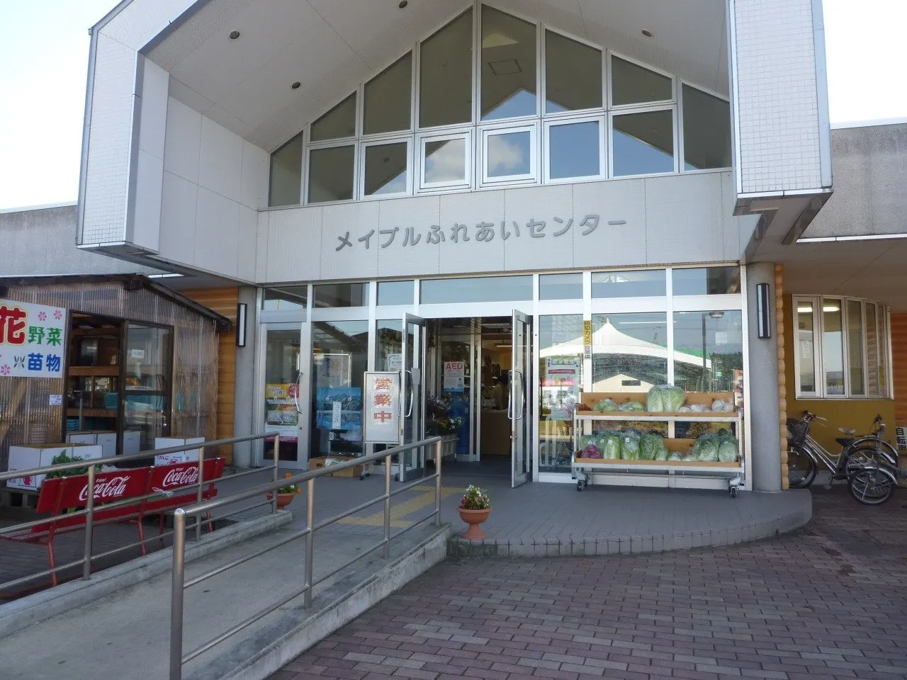
Stay
Dining
六戸温泉
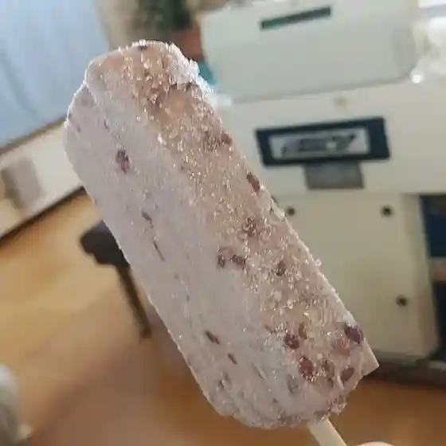
Rokunohe Onsen
メイプルふれあいセンター 軽食コーナー
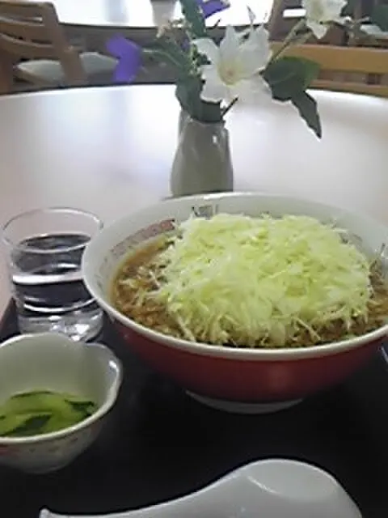
Meipuru Fureai Sentaa Keishoku Koonaa
はぎれやさん
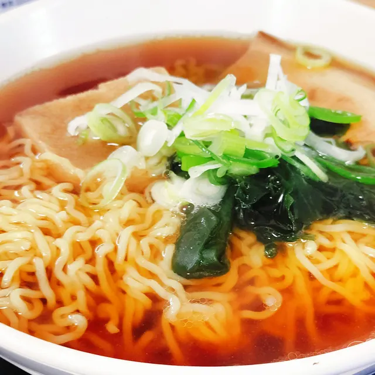
Hagireyasan
LAWSON 六戸バイパス店
Lawson Rokunohe Baipasu Mise
六味庵
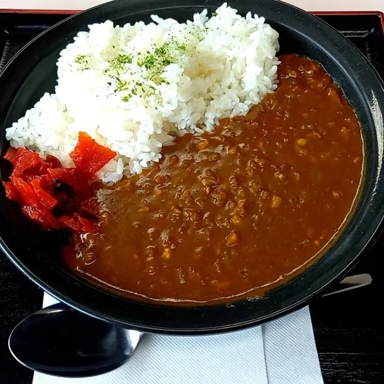
Rokumi Iori
レストラン ヨーロッパ468
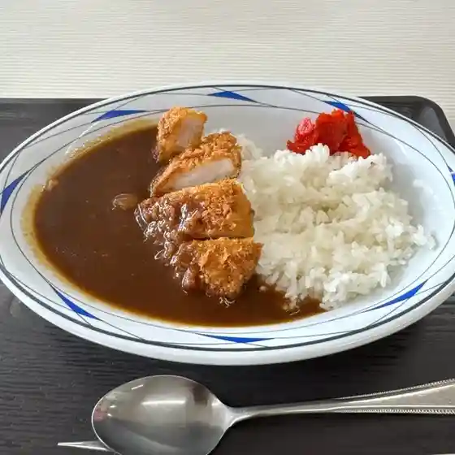
Resutoran Yooroppa 468
煮干しらぁめん はしごだか
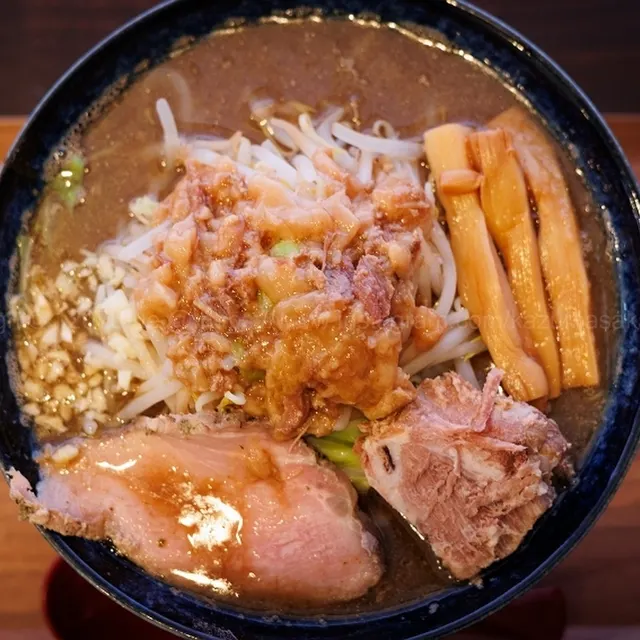
Niboshi Shiraamen Hashigodaka
十和田国際カントリークラブ
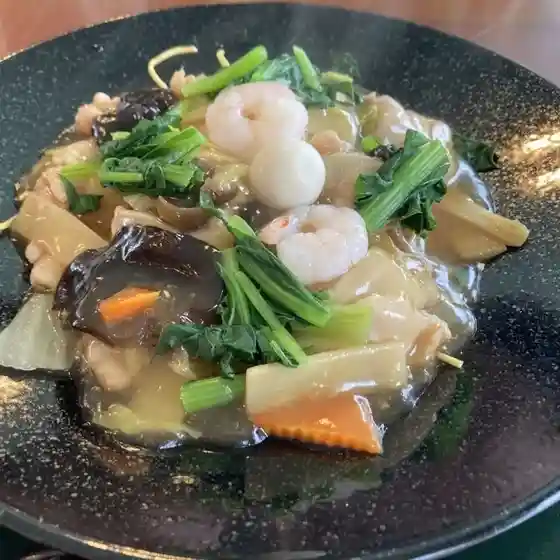
Towada Kokusai Kantoriikurabu
オレンジハート まるとく店
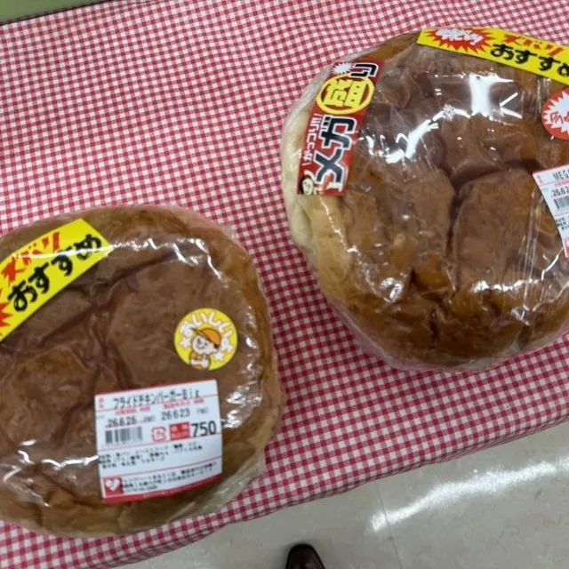
Orenjihaato Marutoku Mise
麺屋 一代
Men Ya Ichidai
天狗とうふ店
Tengu Toufu Mise
らぁ麺 とりぷる
Raa Men Toripuru
ベルキー
Berukii
麺や 夢よし
Men Ya Yume Yoshi
幸寿し
Yukitoshi Shi
オレンジハート 六戸バイパス店
Orenjihaato Rokunohe Baipasu Mise
道の駅 ろくのへ メイプルふれあいセンター
Michi No Eki Rokunohe Meipuru Fureai Sentaa
ツボ カフェ
Tsubo Kafe
もりとみ
Moritomi
小向製菓
Komukai Seika
ゲンコツラーメン
Genkotsuraamen
ニコ ケークス
Niko Keekusu
ファミリーマート 六戸町店
Famiriimaato Rokunohe Machi Mise
かしま菓子店
Kashima Kashi Mise
Sights
Roadside Station Rokunohe Maple Fureai Center
Roadside station on Route 45 between Hachinohe, Misawa and Towada, selling local vegetables and crafts.
Tateno Park
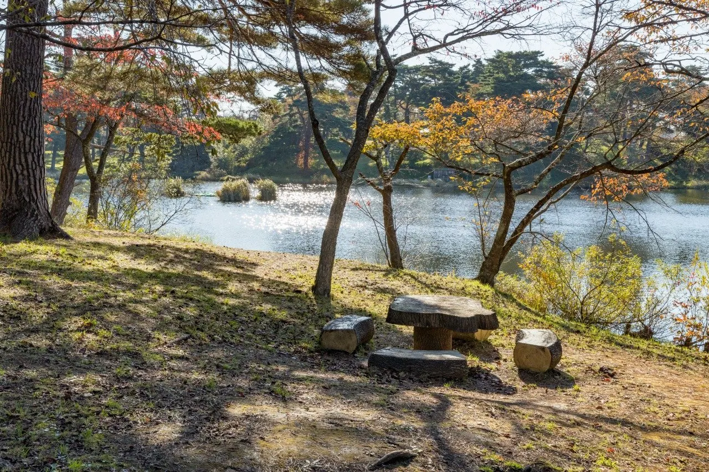
Park famous for over 1,000 pink mountain cherry trees in spring.
Rokunohe Town Folk Museum
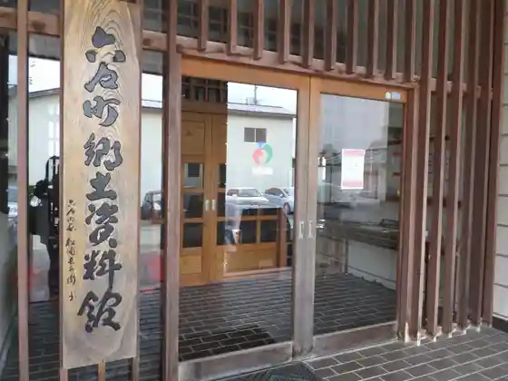
Museum holding about 1,000 items, from excavated pottery to old farm tools.
Kumano Shrine
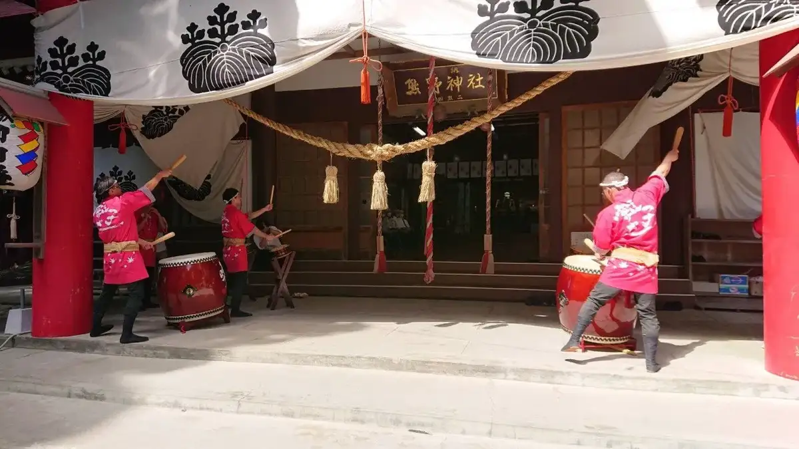
Historic shrine near Tateno Park with an Izumo Taisha-style hall.
Towada International Country Club
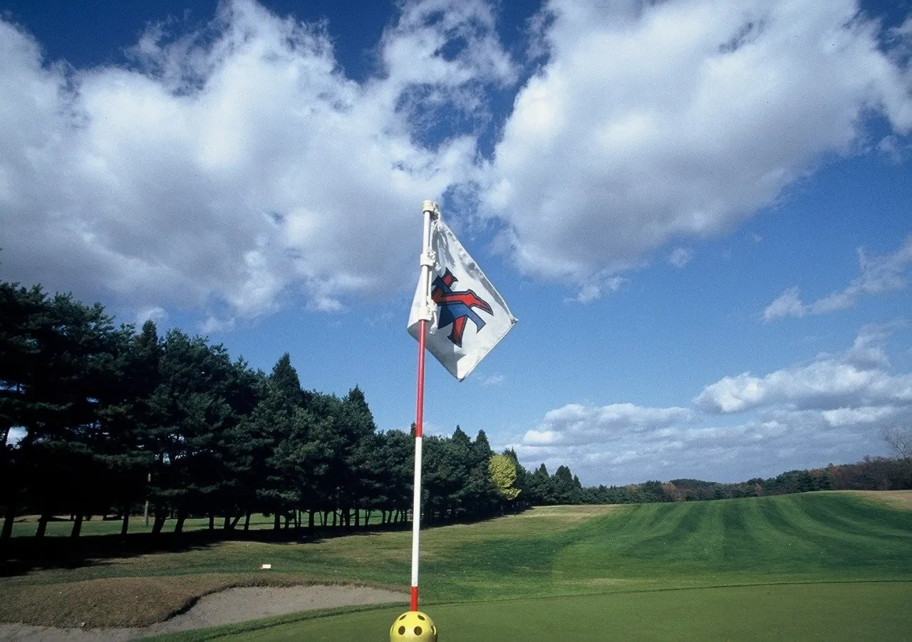
18-hole hilltop golf course opened in 1964, the earliest to open each season in Aomori.
Imakuma Ukemochi Shrine
Hilltop shrine said to be Rokunohe's oldest, with a 400-year-old cedar.